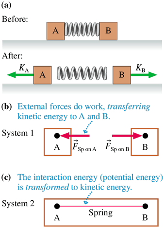
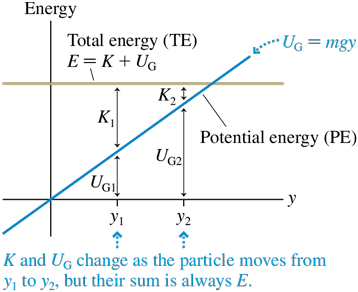

Interactions and Potential Energy.
In chapter 9, we covered the idea of external forces in the environment doing work on a system. In in this chapter, we will discuss forces and work internal to the system.
Potential Energy¶
Systems are merely a tool for analysis, not an actual, real thing. We can define systems as we please. In the following example, \(System_{1}\) is defined such that there is external \(W\) (by the spring) on the system. In this case, the applicable energy principle equation is: $$ \Delta S_{sys 1} = \Delta K_{tot} = \Delta K_{A} + \Delta K_{B} = W_{A} + W_{B} \tag{10.1}$$ meaning that the \(E_{sys 1}\) is completely defined by the \(K_{tot}\). \(System_{2}\) does not have an external interaction with the environment; rather, it has an internal environment. So, the total Work \(W\) on the system is 0.. The \(E_{sys 2}\) is \(K_{tot} + U\) (potential energy). We then revise Equation 10.1 as: $$ \Delta E_{sys 2} = \Delta K_{tot} + \Delta U = (W_{A} + W_{B}) + \Delta U = 0 \tag{10.2}$$ In other words, $$ \Delta U = -(W_{A} + W_{B}) = - W_{internal} \tag{10.3}$$ For Kinetic Energy gained within this system, the exact same amount of potential energy is "lost", or rather, converted (since energy is conserved).
 TL;DR Restricted system of only the particles is just kinetic energy. If the system includes the interaction, it has both potential and kinetic energy.
I. Gravitational Potential¶
When we include the earth in a system involving a particle falling, we can define potential energy like so $$ \Delta U_{G} = -(W_{OnParticleByGravity} + W_{onEarthByGravity}) \tag{10.4} $$ Since \(W = \vec F \cdot \vec \Delta d\), \(W_{OnEarthByGravity}\) is functionally zero, it can be excluded from the equation. If we define the final position (or even the initial) of the falling particle to be \(y=0\), then the Gravitational Potential Energy of the particle is $$ \Delta U_{G} = mgy \tag{10.5} $$
Stay consistent in choosing the zero for \(y\)!
Law of Conservation of Energy: \(E_{mech \> i} = E_{mech \> f} \rightarrow K_{i} + U_{G i} = K_{f} + U_{G f}\)
A. Gravitational Potential Beyond Vertical Free Fall¶
\(\Delta U_{G}\) is solely dependent on an objet's vertical displacement since \(F_{G}\) does not have a horizontal component (given in a standard \(x\)-\(y\) plane). This similarly applies to
B. \(U_{G}\) and \(F_{friction}\)¶
Friction always makes a surface hotter (never colder), it adds to thermal energy of the system and \(E_{mech \> f} < E_{mech \> i}\). $$ K_{i} + U_{G > i} = K_{f} + U_{G > f} + \Delta E_{th} \tag{10.6} $$ System energy is still conserved.
Elastic Potential¶
Much of the concepts of \(U_{G}\) carries over to Elastic Potential Energy in springs. \(\Delta U_{Sp} = - (W_{ByBlockOnSpring} + W_{OnWallBySpring})\) But, once again, the wall has no displacement, thus, actually: $$ \Delta U_{Sp} = -W_{ByBlockOnSpring} \tag{10.7} $$ With the equation for Work by a spring in the previous section (derived by integration): $$ U_{Sp} = \frac{1}{2}k(\Delta s)^2 \tag{10.8} $$
A. With Gravity¶
Conservation of Energy¶
Energy is conserved in an isolated system (no external interactions with the environment).
Energy Diagrams¶
Energy vs. position, with both \(E_{tot}\) and \(U\) graphed.

A minimum point on the PE curve is a point of stable equilibrium, where small disturbances cause small oscillations.
A maximum point on the PE curve is a point of unstable equilibrium, where small disturbances cause a particle to move away.
Strategies: 1. Distance from -axis to PE curve is the PE of the system. KE is the distance from PE to TE. 2. A point where the TE line crosses the PE curve is a turning point (the particle reverses direction). 3. PE cannot be above TE. 4. PE cannot be changed (dependent on mass, spring constant, etc, etc). TE can be changed via initial conditions. 5. PE curve min is stable equilibrium, a max is unstable equilibrium.
Force and Potential Energy¶
\(\(F_{s} = -\frac{\Delta U}{\Delta s} = \lim_{x \to \infty} (-\frac{\Delta U}{\Delta s}) = -\frac{dU}{ds} \tag{10.10}\)\) or in other words, \(F_{s}\) , is the negative of the slope of the PE curve.
Conservative and Nonconservative Forces¶
Why do we have gravitational potential energy, for example, and not tensional or frictional potential energy?
A force for which the work done on a particle as it moves from point A to point B, regardless of the path taken, is a conservative force. Any potential energy can be associated why any conservative force. We use conservative because mechanical energy is conserved. - In other words, an object returning to its original position will suffer no loss of mechanical energy.
A force for which we cannot define a potential energy is a nonconservative force. For example, friction is nonconservative because KE is converted to Thermal Energy and thus there is a loss in KE. - Most forces are not conservative forces.